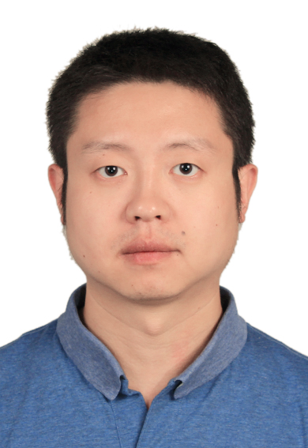

Hai Wang (王海)
中文主页（Chinese Homepage）
- Associate Professor, University of Electronic Science and Technology of China (UESTC)
- E-mail: wanghai@uestc.edu.cn
Education
- Ph.D., University of California at Riverside, USA, 2012
- M.S., University of California at Riverside, USA, 2008
- B.S., Huazhong University of Science and Technology, China, 2007
Research Areas
- Artificial intelligence assisted integrated circuit design
- Design automation of integrated systems
- Computer design
Short Bio
Hai Wang received the BS degree from Huazhong University of Science and
Technology, China, and the MS and PhD degrees from University of
California, Riverside, in 2007, 2008, and 2012, respectively. He is
currently an associate professor with the University of Electronic
Science and Technology of China. His research interests include
modeling, optimization, and artificial intelligence assisted design automation of VLSI circuits and systems. He has served as technical program committee member of several international conferences including
DATE, ASP-DAC and ISQED, and also served as reviewer of many journals
including IEEE Transactions on Computers, IEEE Transactions on
Computer-Aided Design of Integrated Circuits and Systems, and ACM
Transactions on Design Automation of Electronic Systems. He received one Best
Paper Award nomination from ASP-DAC in 2019.
Selected Publications (since 2016)
The authors with star marker * are my students.
- H. Wang, X. Guo*, S. Tan, C. Zhang, H. Tang, and Y. Yuan,
"Leakage-Aware Predictive Thermal Management for Multi-Core Systems
Using Echo State Network", IEEE Transactions on Computer-Aided Design
of Integrated Circuits and Systems (TCAD), 2019.
- H. Wang, D. Tang*, M. Zhang*, S. Tan, C. Zhang, H. Tang, and
Y. Yuan, "GDP: A greedy based dynamic power budgeting method for
multi/many-core systems in dark silicon", IEEE Transactions on
Computers (TC), vol. 68, no. 4, pp. 526-541, April 2019.
- X. Guo*, H. Wang (corresponding author), C. Zhang, H. Tang,
and Y Yuan, "Leakage-Aware Thermal Management for Multi-Core Systems
Using Piecewise Linear Model Based Predictive Control", Asia and South
Pacific Design Automation Conference (ASP-DAC), Jan. 2019, Tokyo,
Japan. (best paper nomination)
- H. Wang, D. Huang*, R. Liu, C. Zhang, H. Tang, and Y. Yuan,
"STREAM: Stress and thermal aware reliability management for 3D-ICs",
IEEE Transactions on Computer-Aided Design of Integrated Circuits and
Systems (TCAD), 2018.
- H. Wang, J. Wan*, S. Tan, C. Zhang, H. Tang, K. Huang,
and Z. Zhang, "A fast leakage-aware full-chip transient thermal estimation
method", IEEE Transactions on Computers (TC), vol. 67, no.5,
pp. 617-630, May 2018.
- H. Wang, J. Ma*, S. Tan, C. Zhang, H. Tang, K. Huang,
and Z. Zhang, "Hierarchical Dynamic Thermal Management Method for
High-Performance Many-Core Microprocessors", ACM Transactions on
Design Automation of Electronic Systems (TODAES), vol. 22, no.1,
Artical 1, pp.1:1-1:21, July 2016.
- L. Zhang*, H. Wang (corresponding author), and S. Tan, "Fast Stress Analysis for
Runtime Reliability Enhancement of 3D IC Using Artificial Neural
Network", Proc. International Symposium on Quality Electronic Design
(ISQED), San Jose, CA, Mar. 2016.
- H. Wang, M. Zhang*, S. Tan, C. Zhang, Y. Yuan, K. Huang,
and Z. Zhang, "New Power Budgeting and Thermal Management Scheme for
Multi-Core Systems in Dark Silicon", Proc. IEEE Internation
System-on-Chip Conference (SOCC), Seattle, WA, Sep. 2016.
- W. Liu*, H. Wang, H. Zhao, S. Wang, H. Chen, Y. Fu, J. Ma*,
X. Li, and S. Tan, "Thermal modeling for energy-efficient smart building
with advanced overfitting technique", Asia and South Pacific Design
Automation Conference (ASP-DAC), Jan. 2016, Macao,
China. (invited)
Last modified: Wed Jul 31 15:40:26 CST 2019